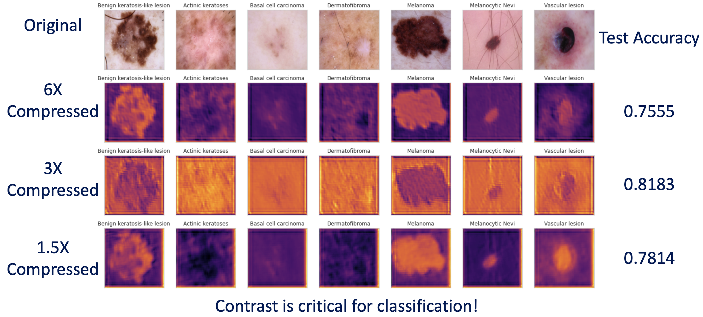
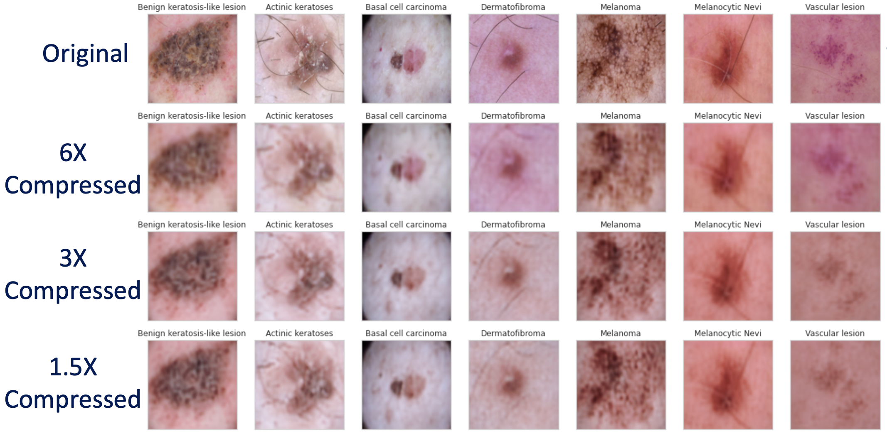

| Paper Link |

|
Neural image compression (NIC) is quickly evolving into a robust and dynamically tunable method for compressing images. In this paper, we sought to investigate how NIC can be used to inform the optimization of inputs for a classification scheme, specifically using the HAM10000 skin lesion dataset. First, we built a classifier on Google's Inception V3 architecture, trained on the data set, and report a test accuracy of 92.1%. Then, we created a convolutional autoencoder with latent-space representing 1.5X, 3X, and 6X compression of the image. All three autoencoders could reproduce the original image with high fidelity. Upon jointly training the autoencoders (1.5X, 3X, 6X) with the classifier in a single model architecture, the fully connected model containing the 3X autoencoder performed the best, with a test accuracy of 82.6%. Upon investigating images before they are passed between the autoencoder and classifier, it appeared that the auto-encoder solely preserved the edges between the skin lesion and its background. Confusion matrix analysis revealed the model performed poorest on lesions with poor lesion-background contrast. This can be used to inform compression schemes that only encode edges, or physical layer optimization to heighten edge contrast before passing into a classifier. 
|